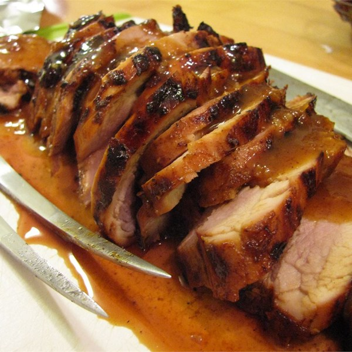

- 2 pounds pork tenderloin
- 2/3 cup honey
- 1/2 cup Dijon mustard
- 1/4 teaspoon chili powder
- 1/4 teaspoon salt
- Place meat in a large resealable plastic bag. In a medium bowl, mix together honey, Dijon mustard, chili powder, and salt.
- Pour marinade over tenderloins, seal, and refrigerate for at least 4 hours.
- Prepare the grill for indirect heat.
- Lightly oil grill grate. Remove meat from marinade, and discard liquid.
- Grill for 15 to 25 minutes, or until an instant-read thermometer inserted into the center reads 145 degrees F